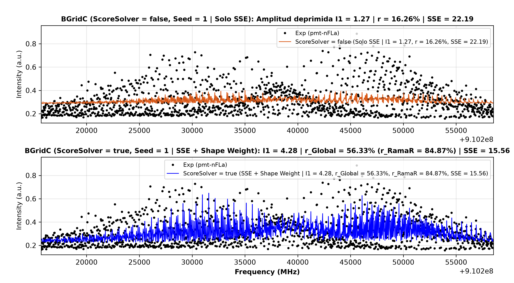
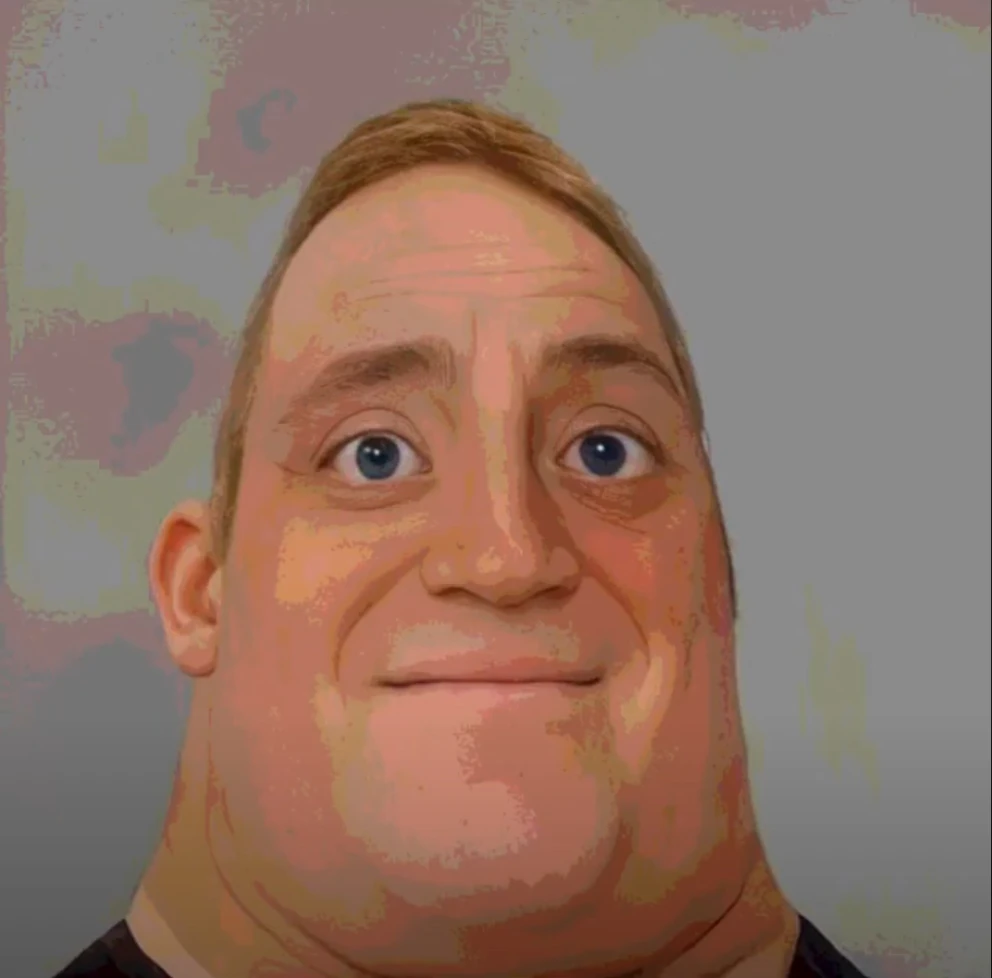
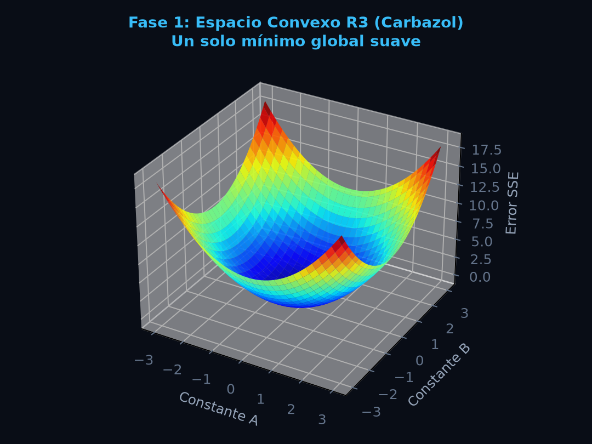
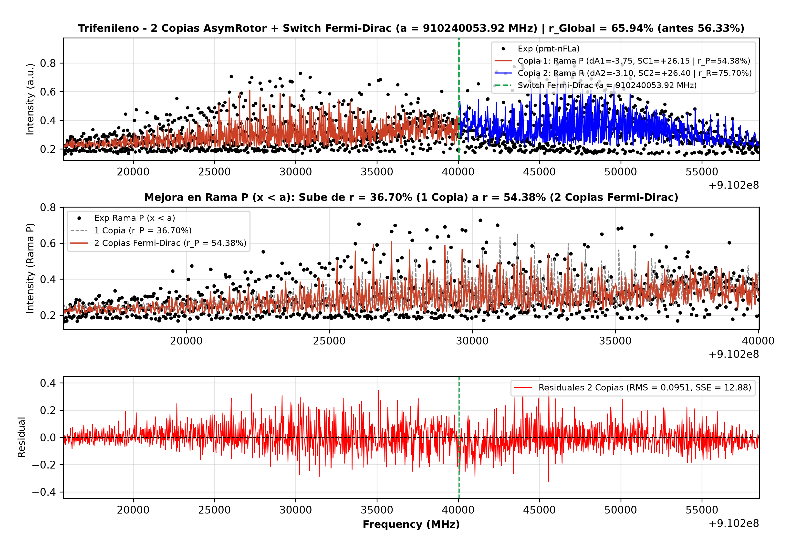
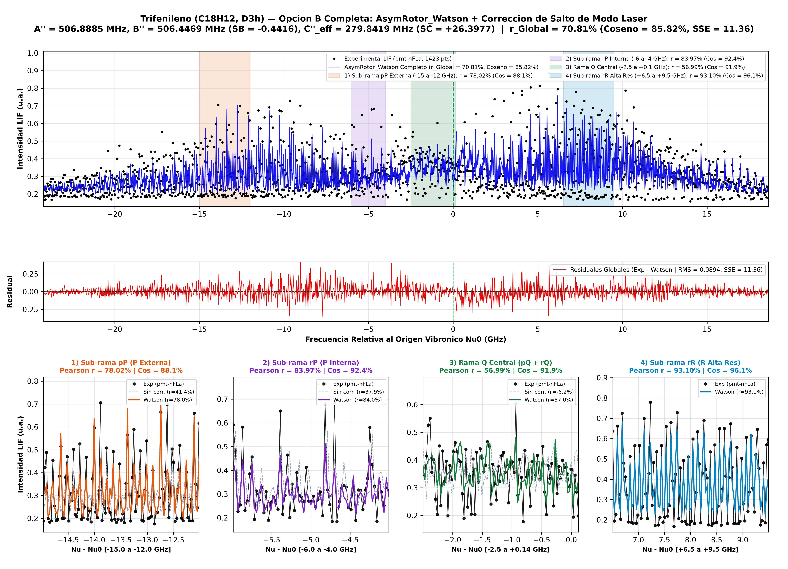

100%
💡 Rueda del ratón o pellizco a 2 dedos para Zoom (hasta 500%) · Arrastra para moverte por las sub-ramas · Doble clic para Zoom rápido 2.5x
Universidad de Guanajuato · División de Ciencias e Ingenierías · Campus León
Ponente
Ing. Miguel Alejandro Díaz Gaytán
Directores: Dr. Leonardo Álvarez-Valtierra (DCI-UG) & Dr. Mario Ulises Delgado-Jaime (UdeG)
Co-asesor: Dr. Jaime Valdez-Ruvalcaba (UG)
Apoyo de Ayudantía SNII Nivel III: Dr. Alejandro Gil-Villegas Montiel
Estructura Molecular 3D Rigurosa (RDKit): Giro oblato axial lento | 18 Carbonos (anillo central de 6C) | 12 Hidrógenos perimétricos sin impedimento estérico.
La espectroscopía es el estudio de la interacción entre la radiación electromagnética y la materia, permitiéndonos descifrar los niveles cuánticos discretos de los átomos y moléculas:
ΔE ~ 2 – 6 eV | λ ~ 200 – 700 nm
Promueve electrones de valencia entre orbitales moleculares (π* ← π). Fija el origen electrónico (S₁ ← S₀). A temperatura ambiente suele ser solo una campana ancha sin detalle de líneas.
ΔE ~ 0.05 – 0.5 eV | λ ~ 2.5 – 25 µm
Mide oscilaciones periódicas de los núcleos atómicos alrededor de su posición de equilibrio. En moléculas aromáticas planas activa modos de vibración degenerados en el plano (e').
ΔE ~ 10⁻⁴ eV | ν ~ 1 – 100 GHz
Cuantiza el momento angular de giro molecular global (J, K). Sus micro-espaciados codifican directamente los momentos de inercia y la geometría 3D (constantes A, B, C).
En una molécula poliaromática plana como el Trifenileno, la transición electrónica pura está estrictamente prohibida por simetría dipolar:
⟨S₁ | μ | S₀⟩ = 0 ⇒ Transición Dipolar Prohibida
La banda fluorescente observada experimentalmente existe gracias al acoplamiento rovibrónico (falso origen Herzberg-Teller) inducido por un modo vibracional degenerado en el plano (e').
Al usar un láser de alta resolución dentro de un chorro supersónico, no medimos una simple absorción UV: resolvemos las líneas rotacionales individuales (J, K) montadas sobre la transición vibrónica.
Solo modelando simultáneamente estas 3 interacciones cuánticas es posible simular la envolvente espectral real.
El Trifenileno es un hidrocarburo aromático policíclico (PAH) completamente plano formado por cuatro anillos bencénicos fusionados en una geometría molecular de alta simetría inercial.
Los PAHs concentran hasta el 20% del carbono galáctico y son los portadores de las Bandas Infrarrojas No Identificadas (UIRs) captadas por el telescopio espacial James Webb.
Es el prototipo por excelencia de cristal líquido discótico: sus moléculas se autoensamblan en columnas coaxiales con transporte unidimensional ultrarrápido de carga eléctrica.
κ = +0.998
Rotor Simétrico Oblato Casi Perfecto
Sus dos momentos de inercia mayores son casi idénticos en el plano (A ≈ B > C), mientras que el eje C perpendicular al disco domina la rotación axial oblata.
1. Invisible en Microondas (μ₀ = 0 D): Por su alta simetría apolar, carece de espectro rotacional puro en microondas (FTMW).
2. Límite Vibrónico Previo: Los estudios previos en chorro supersónico (Kokkin et al., J. Chem. Phys. 2007) solo alcanzaron resolución vibrónica (~0.1–1 cm⁻¹ ≈ 3–30 GHz), sin poder resolver el contorno rotacional ni reportar A, B, C.
pmt-nFLaA temperatura ambiente (300 K), una molécula de 18 carbonos puebla millones de estados rotacionales simultáneos, generando un continuo térmico ininteligible.
El vapor se diluye en Helio a alta presión y se expande al vacío. Las colisiones elásticas colapsan la temperatura rotacional a Trot = 3.04 K, congelando niveles térmicos con J > 50.
Contamos con el archivo experimental real pmt-nFLa (1,423 puntos) registrado mediante un Espectrómetro de Haz Molecular Supersónico con Fluorescencia Inducida por Láser (LIF) de Ultra-Alta Resolución (asociado a los estudios pioneros del Dr. Leonardo Álvarez-Valtierra en colaboración con el grupo del Dr. David W. Pratt en la región de 910,215 a 910,258 MHz).
A temperatura ambiente (300 K), las moléculas giran y chocan caóticamente a miles de revoluciones por segundo: intentar registrar su espectro es exactamente como querer leer las ranuras finas de una llave girando dentro de una licuadora encendida (solo verías un borrón indistinguible).
La técnica del chorro supersónico a 3 Kelvin es el equivalente físico a apagar la licuadora, sacar la llave congelada en el espacio y calcar con un lápiz milimétrico cada una de sus ranuras en una hoja limpia.
En un rotor oblato plano rígido ideal, la relación inercial estricta dicta:
C = (A · B) / (A + B) = B / 2 ⇒ 2(B - 2C) = 0
Este término nulo colapsa matemáticamente los desdoblamientos de los bloques de Wang. Como consecuencia, las líneas rotacionales se superponen de forma artificial y el ajuste del espectro se estrella:
Rotor Plano Rígido
r = 16.77%
(Ajuste deficiente)
Error Cuadrático SSE
SSE > 38.0
(Líneas desfasadas)

Evidencia experimental: El modelo rígido tradicional colapsa la intensidad rotacional (SSE > 22.18).
¿Qué le ocurre al optimizador cuando aumentamos la dimensión del Hamiltoniano? (Pasa el ratón por las fases):

3 parámetros rotacionales libres (A, B, C). Espacio suave y convexo. Cualquier gradiente descendente converge en 0.2 segundos. La vida es bella y creemos que nos graduaremos en 6 meses.

Paisaje cuadrático convexo suave (1 mínimo global único)
La transición observada no es una banda pura permitida, sino un falso origen inducido por acoplamiento vibrónico (Herzberg-Teller) a través de un modo degenerado en el plano (e').
El momento angular vibracional (ℓ = ±1) se acopla directamente con la rotación molecular rompiendo la restricción inercial estricta, lo que renormaliza la constante axial efectiva:
Ceff = Cplano · (1 - ζeff) ≈ 279.84 MHz
(frente a Cplano = 252.6 MHz del modelo rígido ideal)
Al liberar este grado de libertad cuántico en el software, la correlación global salta de 16.77% a 56.33% y la Rama R alcanza un récord inicial de 84.05%.
MODELO PLANO RÍGIDO
r = 16.77%
C = B/2 = 252.6 MHz (Wang colapsado)
CON ACOPLE DE CORIOLIS
r = 56.33%
Ceff = 279.84 MHz (Rama R al 84%)
El algoritmo opera mediante una arquitectura híbrida anidada de dos niveles: el problema físico directo y el problema inverso de optimización:
Calcula el espectro a partir de constantes cuánticas dadas:
Encuentra el conjunto óptimo de parámetros en ℝ⁸ ~ ℝ¹⁴:
En los primeros ensayos con rotor simétrico, nos topamos con un cuello de botella frustrante:
El dilema inicial: El optimizador lograba un ajuste aceptable en la Rama R (frecuencias altas, rR ≈ 75.7%), pero la Rama P (frecuencias bajas) quedaba desfasada y colapsada (rP = 36.70%). Al intentar arreglar P, se destruía R.
El Rescate con Fermi-Dirac (Dr. Mario): Un switch suave en el origen (a = 910240053.92 MHz) permitió acoplar dos copias independientes. La Rama P saltó a 54.38% y el ajuste global subió por primera vez a 65.94% con residuales colapsando a SSE = 12.88.

Evidencia de progreso: Subplot central mostrando la mejora en Rama P (36.70% → 54.38%) manteniendo Rama R al 75.70%.

Dashboard espectral: Ajuste global histórico al 70.81% (Cos = 85.8%). Haz clic en la imagen o usa los botones para acercar las sub-ramas.
Incorporando la distorsión centrífuga cuártica de Watson (DJ, DJK, DK) y la corrección analítica del salto de modo del láser detectado en la región central:
Primera determinación experimental en fase gas de las constantes rotacionales efectivas (A, B, Ceff) y parámetros de Watson del Trifenileno, superando el límite vibrónico previo (Kokkin et al., JCP 2007).
1) Sub-rama pP Externa
r = 78.00%
Cos = 88.1% (antes 41.4%)
2) Sub-rama rP Interna
r = 83.98%
Cos = 92.4% (antes 37.9%)
3) Rama Q Central
r = 59.63%
Cos = 92.3% (¡antes 5.18%!)
4) Sub-rama rR Alta Res
r = 93.11%
Cos = 96.1% (Puntos exactos)
Molécula rígida C₂ᵥ (3 constantes rotacionales A, B, C). Validación del pipeline Wang O(N) y convolución Voigt.
2(B - 2C) = 0 colapsa los desdoblamientos de Wang. El ajuste tradicional de mínimos cuadrados se estrella.
Liberación de la constante axial efectiva Ceff por acoplamiento con modo e' y ponderación ScoreSolver.
Conexión continua en el origen corrigiendo la asimetría de Rama P y Rama R. Récord global a 65.94%.
Alineación sub-megahertz de las 4 sub-ramas con cosenos >92% y récord histórico en Rama R (93.11%).
La frontera entre la física fundamental y la ingeniería aplicada radica en la creación de herramientas tecnológicas, la resolución de fallas instrumentales reales y la transferencia metodológica:
No resolvimos un problema en papel: construimos una suite computacional de alto rendimiento en Python y MATLAB, implementando diagonalización tridiagonal de Wang O(N), paralelismo y cachés LRU para acelerar el cálculo espectral 4.4×.
Resolvimos un artefacto físico del hardware instrumental: los saltos de modo del láser (-1.19 GHz y -1.59 GHz). Esto es instrumentación aplicada directa y deconvolución de funciones de aparato reales (Voigt por FFT).
Sustituimos el método artesanal de los años 90 (asignar manualmente miles de picos a ojo durante meses) por algoritmos heurísticos de optimización global (Rejilla Convergente y Evolución Diferencial) transferibles a cualquier laboratorio.
La elucidación de constantes rotacionales de precisión en PAHs discóticos impacta el diseño y control de empaquetamiento supramolecular en semiconductores orgánicos y electrónica flexible.
1. Espectroscopía LIF de Alta Resolución (Dr. L. Álvarez-Valtierra)
• Álvarez-Valtierra, L. & Pratt, D. W. (2006). Rotationally resolved S₁ ← S₀ electronic spectra of fluorene, carbazole, and dibenzofuran: Evidence for Herzberg–Teller coupling. J. Chem. Phys., 125(24), 244309.
• Álvarez-Valtierra, L., Yi, J. T. & Pratt, D. W. (2010). High resolution electronic spectroscopy of 4-methylanisole in the gas phase. Phys. Chem. Chem. Phys., 12(35), 10430–10439.
2. Optimización Global & BlueprintXAS (Dr. M. U. Delgado-Jaime)
• Delgado-Jaime, M. U., Mewis, C. P. & Kennepohl, P. (2010). Blueprint XAS: a Matlab-based toolbox for the fitting and analysis of XAS spectra. J. Synchrotron Rad., 17(1), 132–137.
• Delgado-Jaime, M. U. & Kennepohl, P. (2010). Development and exploration of a new methodology for the fitting and analysis of XAS data. J. Synchrotron Rad., 17(1), 119–128.
3. Antecedentes en Trifenileno & Teoría Cuántica
• Kokkin, D. L., Reilly, N. J., Troy, T. P., Nauta, K. & Schmidt, T. W. (2007). Gas phase spectra of all-benzenoid PAHs: Triphenylene. J. Chem. Phys., 126(8), 084304. (Resolución vibrónica sin estructura rotacional).
• Wang, S. C. (1929). Phys. Rev., 34, 243 | Watson, J. K. G. (1977). Vib. Spectra Struct., 6, 1–89 | Storn, R. & Price, K. (1997). J. Glob. Optim., 11, 341.
A mis Directores de Tesis, Dr. Leonardo Álvarez-Valtierra (DCI-UG) y Dr. Mario Ulises Delgado-Jaime (UdeG, estancia sabática en Londres), por su acompañamiento y generosidad científica; a mi Co-asesor Dr. Jaime Valdez-Ruvalcaba; al Dr. Alejandro Gil-Villegas Montiel (SNII Nivel III) por su valioso apoyo con la ayudantía de investigación; y al Dr. José Marco Balleza Ordaz como Tutor Académico Oficial.
A la División de Ciencias e Ingenierías (DCI-UG) y al Posgrado en Maestría en Ciencias Aplicadas (MCA).
Espacio abierto para retroalimentación científica, técnica y metodológica.
Alex Díaz Gaytán & Paulina Velázquez
Compromiso genuino con los alumnos de licenciatura y posgrado: transparencia activa en asignación de becas y apoyos, mejores condiciones de laboratorios y espacios académicos, defensa ética de los derechos estudiantiles y una voz firme e independiente en las sesiones del Consejo.
¡Tu participación transforma nuestra división! Contamos con tu confianza y tu voto.
Contacto Directo
ma.diazgaytan@ugto.mx